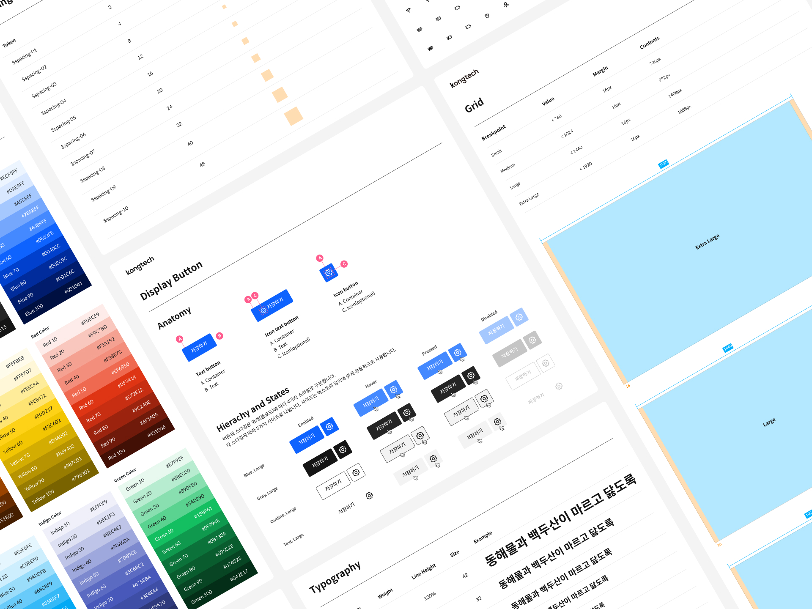
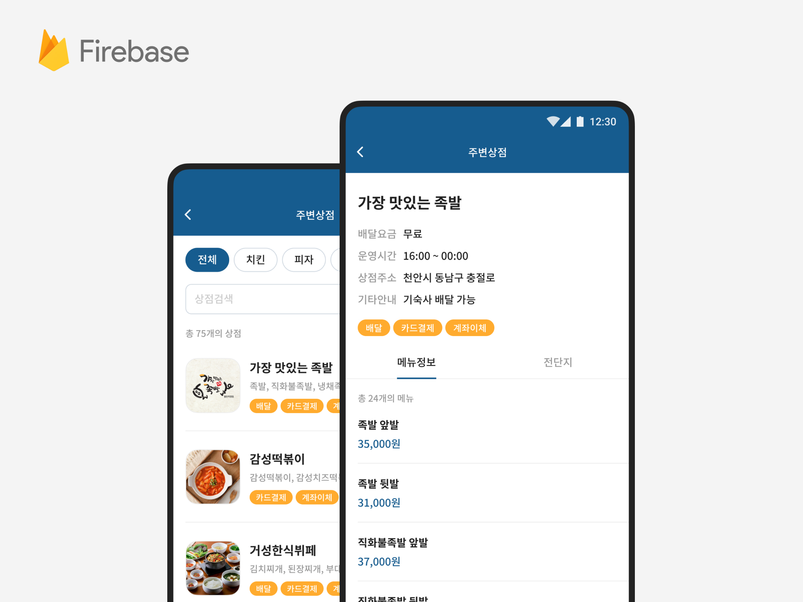

디자인
스터디
발자국
다양한 관심사에 대해서 공부합니다
위치기술 기반 디지털트윈 플랫폼인 오브로의 디자인 개념을 정의하고 이에 따른 디자인 패턴 및 시스템을 구축하는 프로젝트를 진행했습니다. 이 디자인 시스템은 현재도 계속해서 수정 보완 중이고 디자이너와 개발자, 프로덕트에 관여하는 모든 구성원들의 커뮤니케이션을 돕고 있습니다.

Orbro 디자인 시스템 구축
디지털트윈 플랫폼 서비스인 Orbro의 웹 디자인 시스템을 구축했습니다.
together 서비스 디자인
개인프로젝트로 가족가사분담서비스 together를 디자인했습니다.

코인 주변상점 UX개선
학생커뮤니티플랫폼 코인의 음식주문 사용성을 개선하였습니다.